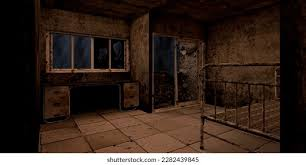

Primer encuentro: 07/10/2012
Ultimo encuentro: 11/08/2024
Contencion: Incapaz de contencion, eliminacion completa
Nv de peligro:5 (Amenaza global)
Estado Actual: Eliminado
["Durante el 2012 hubo una serie de homicidios horribles en la ciudad de FallWood, las victimas eran desangradas o mutiladas y parte de sus organos eran devorados.
Para el publico general esto fue obra de un perturbado mental apodado el carnicero de FallWood, para la organizacion esto fue obra de la entidad 037 a la cual se le apodo como el Departamento 190
al creer que la entidad estaba confinada a dicho departamento, pero mas tarde que nunca se descubrio que no era asi, pues esta cosa podia moverse a diferentes estructuras
de este estilo.
La criatura similar a la famosa creepypasta del Rake con las diferencias que este es de un color mas azulado y que en sus ojos se puede llegar a ver algo similar a las pupilas humanas
fue una de las criaturas que mas daño hizo directa o indirectamente a la organizacion, pues al comenzar su busqueda y captura esta mostro un grado de inteligencia bastante alta
al lograr evitar la captura y eliminacion en varias ocasiones he incluso acabar con personal tanto de captura como de investigacion que vivian en residencias departamentales.
Se descubrio que la criatura solo podia habitar residencias departamentales y que podia acceder a una pequeña dimension de bolsillo.
Durante una operacion en 2019 se penso que la eliminacion de la entidad habia sido un exito, pero lo pagamos caro en 2022 cuando la joven jefa del centro de investigacion de
FallWood Roxanne Summer fue atacada y asesinada por la entidad dentro de su departamento.
No fue hasta el 11/08/2024 el equipo de eliminacion y contencion DOGS liderados por Luis Walker Torres y [Redactado] Alias: Dalmata lograron dar con su ubicacion y finalmente eliminarlo de manera
definitiva que la pesadilla del carnicero de FallWood o la entidad 037 termino para siempre."]